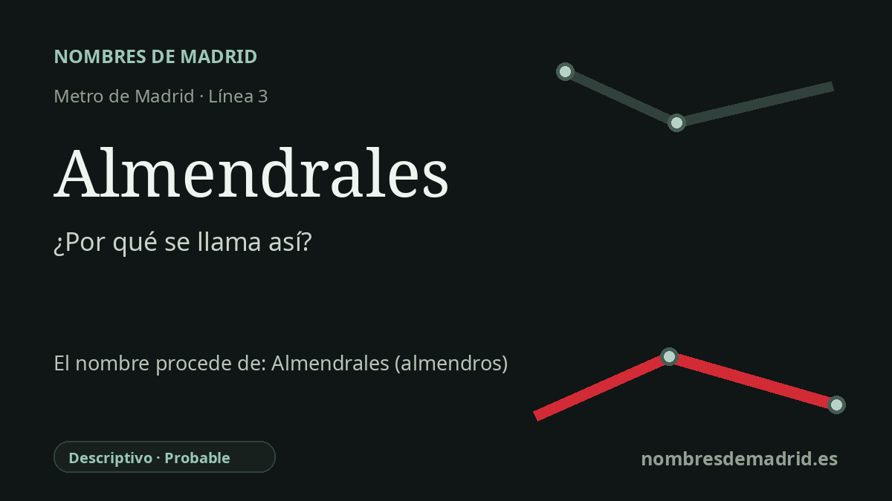

Publicado el · Investigación de Nombres de Madrid · Cómo verificamos cada origen · 9 fuentes consultadas
Respuesta rápida
La estación de Almendrales lleva el nombre del barrio de Usera al que da servicio. El topónimo probablemente alude a almendrales o terrenos poblados de almendros, aunque el origen documental preciso sigue estando débilmente acreditado.
La historia del nombre
La estación de Almendrales toma su nombre del barrio de Almendrales, en Usera, junto a la avenida de Córdoba. La Comunidad de Madrid describe la prolongación de la línea 3 de 2007 como una obra que daba servicio a los barrios de Almendrales y Las Carolinas en esta zona de Usera, de modo que la cadena entre estación y barrio está clara.
La palabra que está detrás del topónimo es transparente en español. La Real Academia Española define almendral como un sitio poblado de almendros, y en plural almendrales alude de forma natural a terrenos o parajes con almendros. Por eso resulta verosímil la explicación local: antes de la expansión densa del sur de Madrid, este borde de Usera combinaba laderas, vaguadas y terrenos todavía rurales.
La historia urbana moderna del nombre tiene varias capas. Madrid Film Office, servicio municipal de rodajes, sitúa la Colonia de los Almendrales entre la avenida de Córdoba, el Hospital 12 de Octubre y el cerro de Usera, y señala que empezó a construirse en 1941, con una primera gran promoción entre 1941 y 1944. Además, un BOE de 1954 menciona las escuelas del Patronato Mater Purissima en la Colonia de los Almendrales, lo que muestra que el nombre de la colonia ya circulaba de forma oficial o semioficial a mediados de los años cincuenta.
Después, el nombre quedó reforzado por la vivienda pública y la remodelación del barrio. La guía de arquitectura del COAM documenta el Poblado de Almendrales, con viviendas para el Instituto Nacional de la Vivienda proyectadas en 1959 y construidas entre 1959 y 1966 por José Antonio Corrales, José María García de Paredes, Ramón Vázquez Molezún y Javier Carvajal. Las historias locales distinguen también Almendrales Altos y Almendrales Bajos, estos últimos asociados a casas bajas informales levantadas por familias migrantes sobre parcelas rurales baratas.
La lectura pública más segura es, por tanto, que la estación lleva el nombre del barrio y que el barrio probablemente conserva un topónimo descriptivo rural relacionado con los almendros. El relato concreto de un propietario que vendió parcelas plantadas de almendros hacia 1954 es plausible, pero por ahora depende de historia local secundaria. No se ha encontrado una fuente más sólida para la expresión exacta 'cerro de los Almendros', por lo que conviene tratarla como no verificada y no como eje de la explicación.